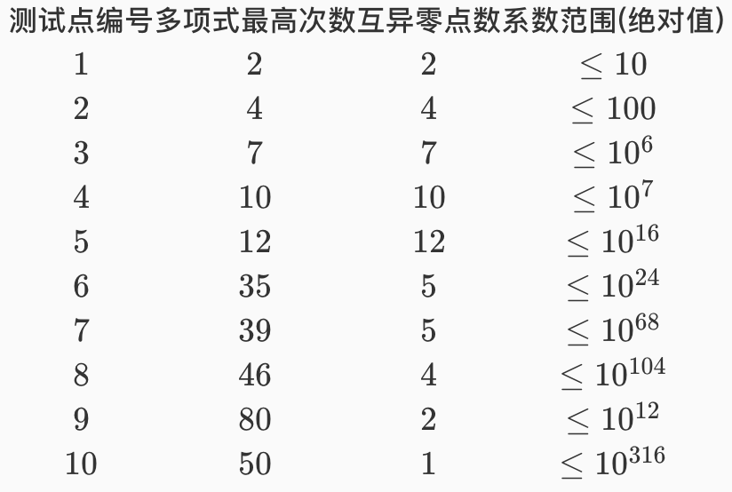

通过代数基本定理，我们知道若计算重根，一个 $n$ 次的多项式在复数域内恰好有 $n$ 个零点（函数值为 0 的点）。现给定一个整系数多项式 $F[x]$，它的 $n$ 个零点恰好都是有理数（即可以写成两个整数相除的形式）；同时，若我们把它所有的非零零点（函数自变量不为 0，函数值为 0）去重，则可以得到 $r$ 个互不相同的非零零点，其中第 $i$ 个非零零点可以被表示成下式：
$sgn_i×\frac{q_i}{p_i}$
式中 $sgn_i$ 表示第 $i$ 个零点的符号，$p_i$ 和 $q_i$ 为互质的两个正整数。
现在告诉你 $F[x]$，要求你输出将他因式分解后的形式。
输入只有一行，包含多项式 $F[x]$。
多项式一定是如下的形式：
$a_nx$^$n+a_{n−1}x$^$n−1+⋯a_1x+a_0n$^$1+a_0$
次数一定为从高到低，其中 $a_i$ 为整数，并且若 $a_i$ 为 0，则省略该项，若 $a_i$ 为负数，则省略之前的加号，若 $a_i$ 的绝对值为 1 且 $i$ 不为 0，则不输出 1，并且保证 $a_n$ 不为 0。
详见样例输入。
输出一行，表示因式分解后的形式，格式如下：
$a_n(x+u_1/v_1)$^$t_1(x+u_2/v_2)$^$t_2…(x+u_s/v_s)$^$t_s$
其中 $u，v$ 互质，且 $v$ 为正整数。
其中 $u_i/v_i$ 从大到小排列，若 $u_i/v_i=0$ 则该项为 $x$^$t_i$，若 $u_i/v_i$ 为负数，则省略加号，若 $v_i$ 为 $1$，则省略 $/v_i$。
若 $t_i$ 为 $1$ 则省略 ^$t_i$。
若 $a_n$ 为 $±1$ 则将 $1$ 省略。
详见样例输出。
8x^7-258x^5+2112x^3-512x
8(x-4)^2(x-1/2)x(x+1/2)(x+4)^2
-x^2+2x-1
-(x-1)^2
【数据规模】

$p_i,q_i$ 满足：
$\prod_{i=1}^{r}p_i\le 10^6,\prod_{i=1}^{r}q_i\le 10^6$
 Comet OJ
Comet OJ